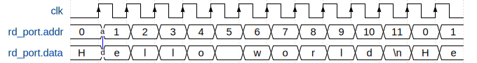

Memory arrays
The amaranth.lib.memory module provides a way to efficiently store data organized as an array of identically shaped rows, which may be addressed (read and/or written) one at a time. This organization is well suited for an efficient implementation in hardware.
Introduction
A memory component is accessed through read and write memory ports, which are interface objects with address, data, and enable ports. The address input selects the memory row to be accessed, the enable input determines whether an access will be made, and the data output (for read ports) or data input (for write ports) transfers data between the memory row and the rest of the design. Read ports can be synchronous (where the memory row access is triggered by the active edge of a clock) or asynchronous (where the memory row is accessed continuously); write ports are always synchronous.
Note
Unfortunately, the terminology related to memories has an ambiguity: a “port” could refer to either an interface port (Signal objects created by the amaranth.lib.wiring module) or to a memory port (ReadPort or WritePort object created by amaranth.lib.memory.Memory).
Amaranth documentation always uses the term “memory port” when referring to the latter.
To use a memory, first create a Memory object, providing a shape, depth (the number of rows), and initial contents. Then, request as many memory ports as the number of concurrent accesses you need to perform by using the Memory.read_port() and Memory.write_port() methods.
Warning
While Memory will provide virtually any memory configuration on request and all will simulate correctly, only a subset of configurations can implemented in hardware efficiently or at all. Exactly what any given hardware platform supports is specific to both the device and the toolchain used.
However, the following two configurations are well-supported on most platforms:
Zero or one write ports and any amount of read ports. Almost all devices include one or two read ports in a hardware memory block, but the toolchain will replicate memory blocks as needed to meet the requested amount of read ports, using more resources.
Two write ports and any amount of read ports whose address input always matches that of the either write port. Most devices include two combined read/write ports in a hardware memory block (known as “true dual-port”, or “TDP”, block RAM), and the toolchain will replicate memory blocks to meet the requested amount of read ports. However, some devices include one read-only and one write-only port in a hardware memory block (known as “simple dual-port”, or “SDP”, block RAM), making this configuration unavailable. Also, the combined (synchronous) read/write port of a TDP block RAM usually does not have independent read enable and write enable inputs; in this configuration, the read enable input should usually be left in the (default if not driven) asserted state.
Most devices include hardware primitives that can efficiently implement memories with asynchronous read ports (known as “LUT RAM”, “distributed RAM”, or “DRAM”; not to be confused with “dynamic RAM”, also abbreviated as “DRAM”). On devices without these hardware primitives, memories with asynchronous read ports are implemented using logic resources, which are consumed at an extremely high rate. Synchronous read ports should be always preferred over asynchronous ones.
Additionally, some memory configurations (that seem like they should be supported by the device and the toolchain) may fail to be recognized, or may use much more resources than they should. This can happen due to device and/or toolchain errata (including defects in Amaranth). Unfortunately, such issues can only be handled on a case-by-case basis; in general, simpler memory configurations are better and more widely supported.
Examples
First, import the Memory class.
from amaranth.lib.memory import Memory
Read-only memory
In the following example, a read-only memory is used to output a fixed message in a loop:
message = b"Hello world\n"
m.submodules.memory = memory = \
Memory(shape=unsigned(8), depth=len(message), init=message)
rd_port = memory.read_port(domain="comb")
with m.If(rd_port.addr == memory.depth - 1):
m.d.sync += rd_port.addr.eq(0)
with m.Else():
m.d.sync += rd_port.addr.eq(rd_port.addr + 1)
character = Signal(8)
m.d.comb += character.eq(rd_port.data)
In this example, the memory read port is asynchronous, and a change of the address input (labelled a on the diagram below) results in an immediate change of the data output (labelled d).
First-in, first-out queue
In a more complex example, a power-of-2 sized writable memory is used to implement a first-in, first-out queue:
push = Signal()
pop = Signal()
m.submodules.memory = memory = \
Memory(shape=unsigned(8), depth=16, init=[])
wr_port = memory.write_port()
m.d.comb += wr_port.en.eq(push)
with m.If(push):
m.d.sync += wr_port.addr.eq(wr_port.addr + 1)
rd_port = memory.read_port(transparent_for=(wr_port,))
m.d.comb += rd_port.en.eq(pop)
with m.If(pop):
m.d.sync += rd_port.addr.eq(rd_port.addr + 1)
# Data can be shifted in via `wr_port.data` and out via `rd_port.data`.
# This example assumes that empty queue will be never popped from.
In this example, the memory read and write ports are synchronous. A write operation (labelled x, w) updates the addressed row 0 on the next clock cycle, and a read operation (labelled y, r) retrieves the contents of the same addressed row 0 on the next clock cycle as well.
However, the memory read port is also configured to be transparent relative to the memory write port. This means that if a write and a read operation (labelled t, u respectively) access the same row with address 3, the new contents will be read out, reducing the minimum push-to-pop latency to one cycle, down from two cycles that would be required without the use of transparency.
![{'signal': [{'name': 'clk', 'wave': 'P........'}, {'name': 'push', 'wave': '01..0.10.', 'node': '.x'}, {'name': 'wr_port.addr', 'wave': '=.===..=.', 'data': ['0', '1', '2', '3', '4', '5']}, {'name': 'wr_port.data', 'wave': '====..=..', 'data': ['00', 'AA', 'BB', 'CC', 'DD'], 'node': '.w....t'}, {'name': 'memory[0]', 'wave': '=.=......', 'data': ['00', 'AA'], 'node': '..G'}, {'name': 'memory[3]', 'wave': '=......=.', 'data': ['00', 'DD'], 'node': '.......H'}, {'name': 'pop', 'wave': '0..1...0.', 'node': '...y'}, {'name': 'rd_port.addr', 'wave': '=...====.', 'data': ['0', '1', '2', '3', '4', '5']}, {'name': 'rd_port.data', 'wave': '=...====.', 'data': ['00', 'AA', 'BB', 'CC', 'DD'], 'node': '....r..u'}], 'edge': ['x-~>G', 'w->G', 'y-~>r', 't->H', 't->u'], 'config': {'skin': 'default'}}](_images/memory/example_fifo.svg)
Simulation
There are two ways to interact with a memory array in a simulator: requesting a read and/or write port that is used only in a testbench, or directly reading and writing memory contents. In most cases, directly accessing memory contents using MemoryData.__getitem__ is more convenient.
For example, this testbench will clear the least significant bit of every memory row:
async def testbench(ctx):
for index in len(memory.data):
ctx.set(memory.data[index], ctx.get(memory.data[index]) & ~1)
Memory description
- exception amaranth.hdl.AlreadyElaborated
Exception raised when an elaboratable is being modified after elaboration.
- class amaranth.hdl.MemoryData(*, shape, depth, init, src_loc_at=0)
Abstract description of a memory array.
A
MemoryDataobject describes the geometry (shape and depth) and the initial contents of a memory array, without specifying the way in which it is accessed. It is conceptually similar to an array ofSignals.The
initparameter and assignment to theinitattribute have the same effect, withMemoryData.Initconverting elements of the iterable to matchshapeand using a default value for rows that are not explicitly initialized.Changing the initial contents of a
MemoryDatais only possible until it is used to elaborate a memory; afterwards, attempting to do so will raise theAlreadyElaboratedexception.Warning
Uninitialized memories (including ASIC memories and some FPGA memories) are not yet supported, and the
initparameter must be always provided, if only asinit=[].- Parameters:
shape (shape-like object) – Shape of each memory row.
depth (
int) – Number of memory rows.init (iterable of initial values) – Initial values for memory rows.
- class Init(...)
Memory initialization data.
This is a special container used only for initial contents of memories. It is similar to
list, but does not support inserting or deleting elements; its length is always the same as the depth of the memory it belongs to.If
shapeis a custom shape-castable object, then:Each element must be convertible to
shapeviaShapeCastable.const(), andElements that are not explicitly initialized default to
shape.const(None).
Otherwise (when
shapeis aShape):Each element must be an
int, andElements that are not explicitly initialized default to
0.
- __getitem__(index)
Retrieve a memory row for simulation.
A
MemoryDataobject can be indexed with anintto construct a special value that can be used to read and write the selected memory row in a simulation testbench, without having to create a memory port.Tip
Even in a simulation, the value returned by this function cannot be used in a module; it can only be used with
sim.get()andsim.set().- Return type:
Memory component
- class amaranth.lib.memory.Memory(data, *, src_loc_at=0)
- class amaranth.lib.memory.Memory(*, shape, depth, init, src_loc_at=0)
Addressable array of rows.
This component is used to construct a memory array by first specifying its dimensions and initial contents using the
MemoryDataobject and thedataparameter (or by providingshape,depth, andinitparameters directly instead) and then adding memory ports using theread_port()andwrite_port()methods. Because it is mutable, it should be created and used locally within the elaborate method.Adding ports or changing initial contents of a
Memoryis only possible until it is elaborated; afterwards, attempting to do so will raise theAlreadyElaboratedexception.Platform overrides
Define the
get_memory()platform method to override the implementation ofMemory, e.g. to instantiate library cells directly.- Parameters:
data (
MemoryData) – Representation of memory geometry and contents.shape (shape-like object) – Shape of each memory row.
depth (
int) – Number of memory rows.init (iterable of initial values) – Initial values for memory rows.
- read_port(*, domain='sync', transparent_for=(), src_loc_at=0)
Request a read port.
If
domainis"comb", the created read port is asynchronous and always enabled (with its enable input is tied toConst(1)), and its data output always reflects the contents of the selected row. Otherwise, the created read port is synchronous, and its data output is updated with the contents of the selected row at each active edge ofdomainwhere the enable input is asserted.The
transparent_forparameter specifies the transparency set of this port: zero or moreWritePorts, all of which must belong to the same memory and clock domain. If another port writes to a memory row at the same time as this port reads from the same memory row, and that write port is a part of the transparency set, then this port retrieves the new contents of the row; otherwise, this port retrieves the old contents of the row.If another write port belonging to a different clock domain updates a memory row that this port is reading at the same time, the behavior is undefined.
The signature of the returned port is
ReadPort.Signature(shape=self.shape, addr_width=ceil_log2(self.depth)).- Return type:
- write_port(*, domain='sync', granularity=None, src_loc_at=0)
Request a write port.
The created write port is synchronous, updating the contents of the selected row at each active edge of
domainwhere the enable input is asserted.Specifying a granularity when
shapeisunsigned(width)ordata.ArrayLayout(_, width)makes it possible to partially update a memory row. In this case,granularitymust be an integer that evenly divideswidth, and the memory row is split intowidth // granularityequally sized parts, each of which is updated if the corresponding bit of the enable input is asserted.The signature of the new port is
WritePort.Signature(shape=self.shape, addr_width=ceil_log2(self.depth), granularity=granularity).- Return type:
- property read_ports
All read ports defined so far.
This property is provided for the
platform.get_memory()override.
- property write_ports
All write ports defined so far.
This property is provided for the
platform.get_memory()override.
Memory ports
- class amaranth.lib.memory.ReadPort(...)
A read memory port.
Memory read ports, which are interface objects, can be constructed by calling
Memory.read_port()or viaReadPort.Signature.create().An asynchronous (
"comb"domain) memory read port is always enabled. Theeninput of such a port is tied toConst(1).- Attributes:
signature (
ReadPort.Signature) – Signature of this memory port.memory (
MemoryorNone) – Memory associated with this memory port.domain (
str) – Name of this memory port’s clock domain. For asynchronous ports,"comb".transparent_for (
tupleofWritePort) – Transparency set of this memory port.
- class Signature(*, addr_width, shape)
Signature of a memory read port.
- Parameters:
addr_width (
int) – Width of the address port.shape (shape-like object) – Shape of the data port.
- Members:
en (
In(1, init=1)) – Enable input.addr (
In(addr_width)) – Address input.data (
Out(shape)) – Data output.
- class amaranth.lib.memory.WritePort(...)
A write memory port.
Memory write ports, which are interface objects, can be constructed by calling
Memory.write_port()or viaWritePort.Signature.create().- Attributes:
signature (
WritePort.Signature) – Signature of this memory port.memory (
MemoryorNone) – Memory associated with this memory port.domain (
str) – Name of this memory port’s clock domain. Never"comb".
- class Signature(*, addr_width, shape, granularity=None)
Signature of a memory write port.
Width of the enable input is determined as follows:
If
granularityisNone, thenen_width == 1.If
shapeisunsigned(data_width), thenen_width == data_width // granularity.If
shapeisdata.ArrayLayout(_, elem_count), thenen_width == elem_count // granularity.
- Parameters:
addr_width (
int) – Width of the address port.shape (shape-like object) – Shape of the data port.
granularity (
intorNone) – Granularity of memory access.
- Members:
en (
In(en_width)) – Enable input.addr (
In(addr_width)) – Address input.data (
In(shape)) – Data input.